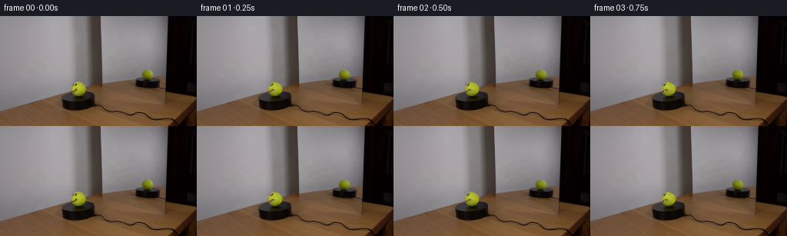
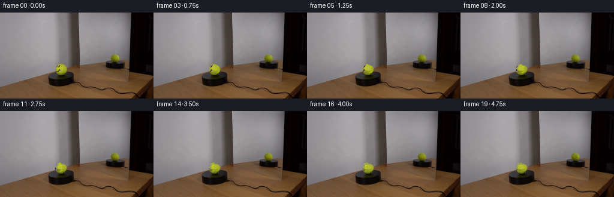
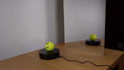
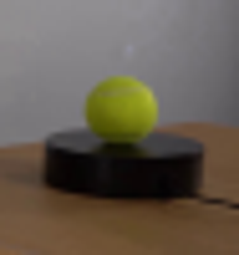
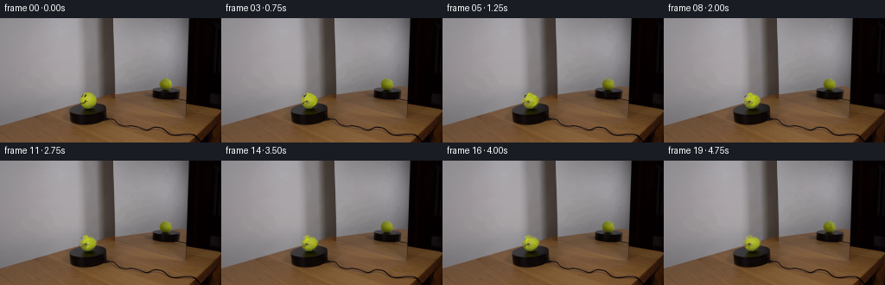
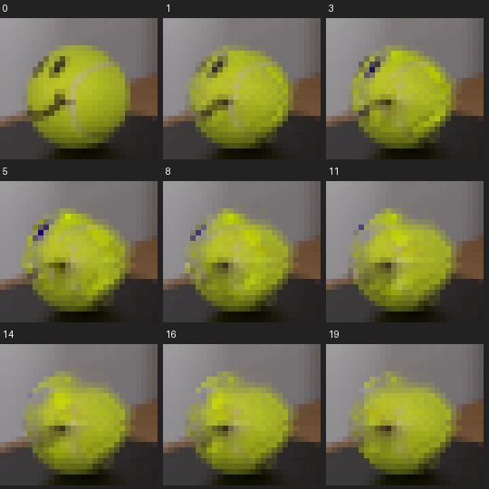
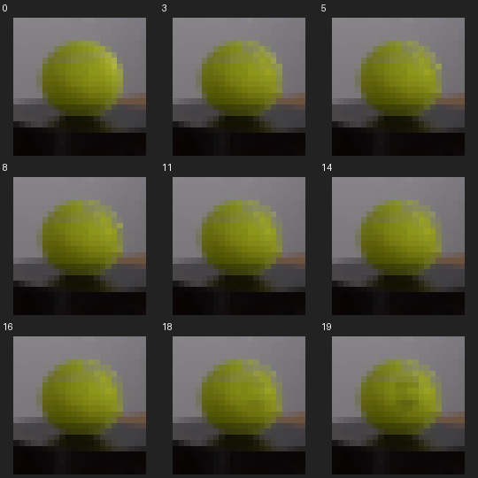
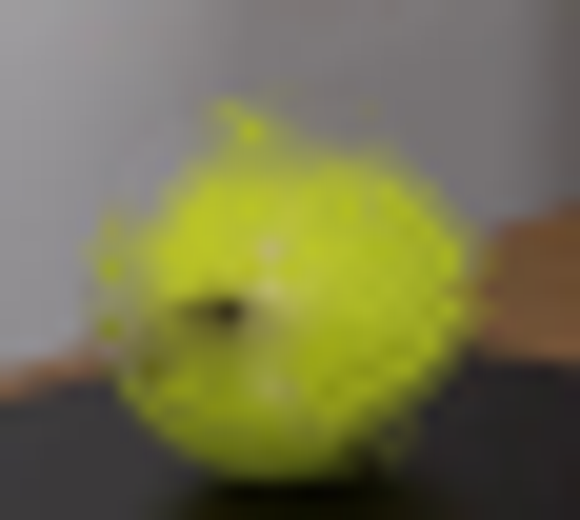
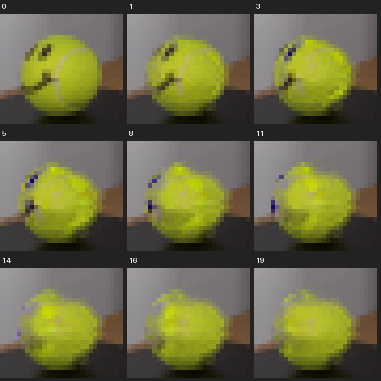

CODING AGENTS AS PIXEL WORLD MODELS
traex/GPT-5.6-Sol · 0120
点击播放 · 原生 RGB 像素
逐轮保存的候选
回放视频、检查图与代码变化。
每份候选均可单独播放。实际图片检查记录在下方工具轨迹中。
候选 01播放与检查图
点击播放 · 原生 RGB 像素


展开代码变化
--- 上一保存版本
+++ 本次保存版本
@@ -0,0 +1,137 @@
+from pathlib import Path
+import numpy as np
+import cv2
+from PIL import Image, ImageDraw, ImageFilter
+import artifact_io
+
+CASE_DIR = Path(__file__).resolve().parent
+
+
+def soft_mask_from_draw(size, draw_fn, blur=0.55, scale=4):
+ w, h = size
+ canvas = Image.new('L', (w*scale, h*scale), 0)
+ d = ImageDraw.Draw(canvas)
+ class D:
+ def polygon(self, pts, fill=255): d.polygon([(int(x*scale),int(y*scale)) for x,y in pts], fill=fill)
+ def ellipse(self, box, fill=255): d.ellipse(tuple(int(v*scale) for v in box), fill=fill)
+ def line(self, pts, fill=255, width=1): d.line([(int(x*scale),int(y*scale)) for x,y in pts], fill=fill, width=int(width*scale), joint='curve')
+ draw_fn(D())
+ if blur:
+ canvas = canvas.filter(ImageFilter.GaussianBlur(blur*scale))
+ return np.asarray(canvas.resize((w,h), Image.Resampling.LANCZOS), np.float32)/255.0
+
+
+def hard_mask(size, draw_fn, scale=4):
+ return soft_mask_from_draw(size, draw_fn, blur=0, scale=scale)
+
+
+def make_clean_and_residual(rgb, which='main'):
+ h,w = rgb.shape[:2]
+ if which == 'main':
+ def marks(d):
+ # Two irregular eyes, curved smile, and the tennis-ball's pale seam.
+ d.polygon([(95.0,89.0),(97.1,87.2),(99.4,87.5),(100.0,89.5),(98.8,92.4),(96.2,94.0),(94.7,92.8)],255)
+ d.polygon([(101.3,87.1),(103.3,86.6),(105.4,87.6),(105.5,89.4),(104.2,91.9),(101.5,92.2),(100.6,90.4)],255)
+ d.line([(94.8,95.0),(95.8,97.3),(98.3,98.8),(100.7,98.8),(103.5,96.5),(104.6,94.7)],255,2.7)
+ d.ellipse((94.2,94.1,97.2,97.7),255)
+ # Curving seam down the right/front of the ball.
+ d.line([(105.1,87.7),(107.5,89.0),(109.7,90.8),(111.3,93.4),(111.8,96.5),(110.3,99.2),(107.4,101.3),(104.8,102.3)],255,2.25)
+ mm = hard_mask((w,h), marks)
+ # Restrict edits to the actual ball.
+ yy,xx=np.mgrid[:h,:w]
+ ball=((xx-102.2)/10.6)**2+((yy-95.0)/10.0)**2 <= 1.03
+ mm=(mm*255).astype(np.uint8)
+ mm[~ball]=0
+ else:
+ def marks(d):
+ # Faint visible seam on the reflected, otherwise blank side.
+ d.line([(194.3,70.4),(196.7,72.2),(198.1,74.6),(198.3,77.2)],255,1.7)
+ mm=(hard_mask((w,h),marks)*255).astype(np.uint8)
+ # Telea fill removes only painted material, preserving fixed illumination and fuzz.
+ bgr=cv2.cvtColor(rgb,cv2.COLOR_RGB2BGR)
+ clean_bgr=cv2.inpaint(bgr,mm,2.3,cv2.INPAINT_TELEA)
+ clean=cv2.cvtColor(clean_bgr,cv2.COLOR_BGR2RGB).astype(np.float32)
+ # Residual holds the original printed ink / seam with its native blur and shading.
+ a=cv2.GaussianBlur(mm.astype(np.float32)/255.0,(0,0),0.42)
+ a=np.clip(a,0,1)[...,None]
+ residual=(rgb.astype(np.float32)-clean)*a
+ return clean,residual,a[...,0]
+
+
+def sphere_rotate_residual(residual, cx,cy,rx,ry, angle):
+ """Yaw a photographed surface residual over a projected sphere."""
+ h,w=residual.shape[:2]
+ yy,xx=np.mgrid[0:h,0:w].astype(np.float32)
+ dy=(yy-cy)/ry
+ rowrad=rx*np.sqrt(np.maximum(0.0,1.0-dy*dy))
+ inside=(np.abs(dy)<=1.0) & (np.abs(xx-cx)<=rowrad+0.15)
+ q=np.zeros_like(xx)
+ q[inside]=np.clip((xx[inside]-cx)/np.maximum(rowrad[inside],.15),-1,1)
+ lam=np.arcsin(q)
+ source_lam=lam-angle
+ visible=inside & (source_lam>-np.pi/2) & (source_lam<np.pi/2)
+ mapx=np.full((h,w),-10,np.float32); mapy=np.full((h,w),-10,np.float32)
+ mapx[visible]=cx+rowrad[visible]*np.sin(source_lam[visible])
+ mapy[visible]=yy[visible]
+ moved=cv2.remap(residual,mapx,mapy,cv2.INTER_CUBIC,borderMode=cv2.BORDER_CONSTANT,borderValue=0)
+ # A material patch foreshortens naturally through the inverse spherical map.
+ return moved, inside
+
+
+def compose_region(frame, clean, moved, inside, cx,cy,rx,ry):
+ h,w=frame.shape[:2]
+ yy,xx=np.mgrid[:h,:w]
+ # Soft only at the silhouette so the original fuzzy tennis-ball edge remains stable.
+ dist=((xx-cx)/rx)**2+((yy-cy)/ry)**2
+ edge=np.clip((1.025-dist)/0.055,0,1).astype(np.float32)[...,None]
+ candidate=np.clip(clean+moved,0,255)
+ return np.clip(frame.astype(np.float32)*(1-edge)+candidate*edge,0,255).astype(np.uint8)
+
+
+def add_late_reflected_face(frame, phase):
+ """At the very end the turning face just begins to enter the mirror's view."""
+ if phase <= 0: return frame
+ # Kept subdued and tiny, as expected in the slightly soft mirror image.
+ overlay=Image.new('RGBA',(256*4,144*4),(0,0,0,0)); d=ImageDraw.Draw(overlay)
+ s=4
+ alpha=int(95*np.clip(phase,0,1))
+ # It enters at the right limb of the reflected sphere and shifts inward.
+ dx=(2.8-2.4*phase)*s
+ col=(38,39,18,alpha)
+ d.ellipse((int(191.0*s+dx),int(74.0*s),int(192.1*s+dx),int(75.4*s)),fill=col)
+ d.ellipse((int(193.0*s+dx),int(73.8*s),int(194.1*s+dx),int(75.2*s)),fill=col)
+ d.arc((int(190.7*s+dx),int(74.8*s),int(194.5*s+dx),int(78.4*s)),5,165,fill=col,width=2*s)
+ overlay=overlay.filter(ImageFilter.GaussianBlur(0.55*s)).resize((256,144),Image.Resampling.LANCZOS)
+ out=Image.alpha_composite(Image.fromarray(frame).convert('RGBA'),overlay).convert('RGB')
+ return np.asarray(out)
+
+
+def main():
+ original=np.asarray(Image.open(CASE_DIR/'first_frame.png').convert('RGB'),dtype=np.uint8)
+ clean_main,res_main,_=make_clean_and_residual(original,'main')
+ clean_mirror,res_mirror,_=make_clean_and_residual(original,'mirror')
+ frames=[]
+ # Smooth constant-rate rotation: 95 degrees over the photographed 4.75 seconds.
+ total=np.deg2rad(-95.0)
+ for i in range(20):
+ if i==0:
+ frames.append(original.copy()); continue
+ angle=total*i/19.0
+ frame=original.copy()
+ moved,inside=sphere_rotate_residual(res_main,102.2,95.0,10.6,10.0,angle)
+ frame=compose_region(frame,clean_main,moved,inside,102.2,95.0,10.6,10.0)
+ # A mirror reverses the apparent horizontal direction. Its view is offset around
+ # the sphere, hence the side seam progresses gently while the side stays blank.
+ mangle=-angle*0.72
+ moved_m,inside_m=sphere_rotate_residual(res_mirror,191.7,77.3,7.15,7.35,mangle)
+ frame=compose_region(frame,clean_mirror,moved_m,inside_m,191.7,77.3,7.15,7.35)
+ # Only a faint hint enters during the last half-second; initially it is unequivocally blank.
+ frame=add_late_reflected_face(frame,max(0.0,(i-17)/2.0))
+ frames.append(frame)
+ frames=np.stack(frames).astype(np.uint8)
+ # Contract guarantee: attached source is the exact first video frame.
+ frames[0]=original
+ artifact_io.save(frames,CASE_DIR)
+
+if __name__=='__main__':
+ main()
候选 02播放与检查图
点击播放 · 原生 RGB 像素

展开代码变化
--- 上一保存版本
+++ 本次保存版本
@@ -34,6 +34,8 @@
d.polygon([(101.3,87.1),(103.3,86.6),(105.4,87.6),(105.5,89.4),(104.2,91.9),(101.5,92.2),(100.6,90.4)],255)
d.line([(94.8,95.0),(95.8,97.3),(98.3,98.8),(100.7,98.8),(103.5,96.5),(104.6,94.7)],255,2.7)
d.ellipse((94.2,94.1,97.2,97.7),255)
+ d.ellipse((98.1,94.0,102.2,99.3),255)
+ d.line([(96.2,97.2),(99.0,99.3),(101.6,98.9),(104.2,96.4)],255,2.9)
# Curving seam down the right/front of the ball.
d.line([(105.1,87.7),(107.5,89.0),(109.7,90.8),(111.3,93.4),(111.8,96.5),(110.3,99.2),(107.4,101.3),(104.8,102.3)],255,2.25)
mm = hard_mask((w,h), marks)
可观测工具轨迹
实际执行的命令与返回图片。
命令 1exit 0
/bin/bash -lc "cat prompt.txt && printf '\\n---GENERATION_RULES---\\n' && cat GENERATION_RULES.md"
命令 2exit 1
/bin/bash -lc "find . -maxdepth 2 -type f -printf '%p %s bytes\\n' | sort && printf '\\nTOOLS\\n' && command -v ffmpeg && ffmpeg -version | head -n 2 && command -v python3"
命令 3exit 0
/bin/bash -lc 'cat artifact_io.py'
命令 4exit 0
/bin/bash -lc "python3 - <<'PY'
from PIL import Image
im=Image.open('first_frame.png')
print(im.mode, im.size)
print(im.getpixel((102,97)),im.getpixel((191,77)))
PY"命令 5exit 0
/bin/bash -lc "python3 - <<'PY' mods=['cv2','scipy','numpy','PIL','imageio'] for m in mods: try: q=__import__(m); print(m,'yes',getattr(q,'__version__','')) except Exception as e: print(m,'no',e) PY"
命令 6exit 0
/bin/bash -lc "python3 - <<'PY'
from PIL import Image
im=Image.open('first_frame.png')
# upscale crops
im.crop((70,65,125,125)).resize((440,480)).save('.tmp/maincrop.png')
im.crop((168,55,215,105)).resize((470,500)).save('.tmp/mirrorcrop.png')
PY"命令 7exit 0
/bin/bash -lc "python3 - <<'PY'
from PIL import Image
import numpy as np
im=np.array(Image.open('first_frame.png'))
for y in range(86,107):
s=''
for x in range(91,114):
r,g,b=im[y,x];
# chars dark relative green ball
if g>120 and g>r*1.02:
lum=(int(r)+int(g)+int(b))//3
s += '@' if lum<55 else '#' if lum<80 else 'o' if lum<110 else '+' if lum<140 else '.'
else:s+=' '
print(f'{y:3} {s}')
print('dark coords')
for y in range(86,107):
for x in range(91,114):
r,g,b=map(int,im[y,x]);
if g>100 and (r+g+b)/3<85: print(x,y,(r,g,b))
PY"命令 8exit 0
/bin/bash -lc "python3 - <<'PY'
import cv2,numpy as np
im=cv2.imread('first_frame.png')
hsv=cv2.cvtColor(im,cv2.COLOR_BGR2HSV)
for lo in [(20,40,35),(25,50,40),(25,65,50),(28,40,40)]:
m=cv2.inRange(hsv,np.array(lo),np.array((50,255,255)))
n,lab,stats,c=cv2.connectedComponentsWithStats(m)
print(lo,sorted(stats[1:].tolist(),key=lambda x:x[4],reverse=True)[:5])
PY"命令 9exit 0
/bin/bash -lc "python3 - <<'PY'
from PIL import Image
import numpy as np, cv2
im=np.array(Image.open('first_frame.png'))
hsv=cv2.cvtColor(im,cv2.COLOR_RGB2HSV)
for y in range(87,102):
print('y',y)
for x in range(93,112):
r,g,b=map(int,im[y,x]); h,s,v=map(int,hsv[y,x])
if (r+g+b)/3<130 or s<80:
print(x,(r,g,b),'hsv',(h,s,v),end='; ')
print()
PY"命令 10exit 0
/bin/bash -lc "cat > generate.py <<'PY'
from pathlib import Path
import numpy as np
import cv2
from PIL import Image, ImageDraw, ImageFilter
import artifact_io
CASE_DIR = Path(__file__).resolve().parent
def soft_mask_from_draw(size, draw_fn, blur=0.55, scale=4):
w, h = size
canvas = Image.new('L', (w*scale, h*scale), 0)
d = ImageDraw.Draw(canvas)
class D:
def polygon(self, pts, fill=255): d.polygon([(int(x*scale),int(y*scale)) for x,y in pts], fill=fill)
def ellipse(self, box, fill=255): d.ellipse(tuple(int(v*scale) for v in box), fill=fill)
def line(self, pts, fill=255, width=1): d.line([(int(x*scale),int(y*scale)) for x,y in pts], fill=fill, width=int(width*scale), joint='curve')
draw_fn(D())
if blur:
canvas = canvas.filter(ImageFilter.GaussianBlur(blur*scale))
return np.asarray(canvas.resize((w,h), Image.Resampling.LANCZOS), np.float32)/255.0
def hard_mask(size, draw_fn, scale=4):
return soft_mask_from_draw(size, draw_fn, blur=0, scale=scale)
def make_clean_and_residual(rgb, which='main'):
h,w = rgb.shape[:2]
if which == 'main':
def marks(d):
# Two irregular eyes, curved smile, and the tennis-ball's pale seam.
d.polygon([(95.0,89.0),(97.1,87.2),(99.4,87.5),(100.0,89.5),(98.8,92.4),(96.2,94.0),(94.7,92.8)],255)
d.polygon([(101.3,87.1),(103.3,86.6),(105.4,87.6),(105.5,89.4),(104.2,91.9),(101.5,92.2),(100.6,90.4)],255)
d.line([(94.8,95.0),(95.8,97.3),(98.3,98.8),(100.7,98.8),(103.5,96.5),(104.6,94.7)],255,2.7)
d.ellipse((94.2,94.1,97.2,97.7),255)
# Curving seam down the right/front of the ball.
d.line([(105.1,87.7),(107.5,89.0),(109.7,90.8),(111.3,93.4),(111.8,96.5),(110.3,99.2),(107.4,101.3),(104.8,102.3)],255,2.25)
mm = hard_mask((w,h), marks)
# Restrict edits to the actual ball.
yy,xx=np.mgrid[:h,:w]
ball=((xx-102.2)/10.6)**2+((yy-95.0)/10.0)**2 <= 1.03
mm=(mm*255).astype(np.uint8)
mm[~ball]=0
else:
def marks(d):
# Faint visible seam on the reflected, otherwise blank side.
d.line([(194.3,70.4),(196.7,72.2),(198.1,74.6),(198.3,77.2)],255,1.7)
mm=(hard_mask((w,h),marks)*255).astype(np.uint8)
# Telea fill removes only painted material, preserving fixed illumination and fuzz.
bgr=cv2.cvtColor(rgb,cv2.COLOR_RGB2BGR)
clean_bgr=cv2.inpaint(bgr,mm,2.3,cv2.INPAINT_TELEA)
clean=cv2.cvtColor(clean_bgr,cv2.COLOR_BGR2RGB).astype(np.float32)
# Residual holds the original printed ink / seam with its native blur and shading.
a=cv2.GaussianBlur(mm.astype(np.float32)/255.0,(0,0),0.42)
a=np.clip(a,0,1)[...,None]
residual=(rgb.astype(np.float32)-clean)*a
return clean,residual,a[...,0]
def sphere_rotate_residual(residual, cx,cy,rx,ry, angle):
\"\"\"Yaw a photographed surface residual over a projected sphere.\"\"\"
h,w=residual.shape[:2]
yy,xx=np.mgrid[0:h,0:w].astype(np.float32)
dy=(yy-cy)/ry
rowrad=rx*np.sqrt(np.maximum(0.0,1.0-dy*dy))
inside=(np.abs(dy)<=1.0) & (np.abs(xx-cx)<=rowrad+0.15)
q=np.zeros_like(xx)
q[inside]=np.clip((xx[inside]-cx)/np.maximum(rowrad[inside],.15),-1,1)
lam=np.arcsin(q)
source_lam=lam-angle
visible=inside & (source_lam>-np.pi/2) & (source_lam<np.pi/2)
mapx=np.full((h,w),-10,np.float32); mapy=np.full((h,w),-10,np.float32)
mapx[visible]=cx+rowrad[visible]*np.sin(source_lam[visible])
mapy[visible]=yy[visible]
moved=cv2.remap(residual,mapx,mapy,cv2.INTER_CUBIC,borderMode=cv2.BORDER_CONSTANT,borderValue=0)
# A material patch foreshortens naturally through the inverse spherical map.
return moved, inside
def compose_region(frame, clean, moved, inside, cx,cy,rx,ry):
h,w=frame.shape[:2]
yy,xx=np.mgrid[:h,:w]
# Soft only at the silhouette so the original fuzzy tennis-ball edge remains stable.
dist=((xx-cx)/rx)**2+((yy-cy)/ry)**2
edge=np.clip((1.025-dist)/0.055,0,1).astype(np.float32)[...,None]
candidate=np.clip(clean+moved,0,255)
return np.clip(frame.astype(np.float32)*(1-edge)+candidate*edge,0,255).astype(np.uint8)
def add_late_reflected_face(frame, phase):
\"\"\"At the very end the turning face just begins to enter the mirror's view.\"\"\"
if phase <= 0: return frame
# Kept subdued and tiny, as expected in the slightly soft mirror image.
overlay=Image.new('RGBA',(256*4,144*4),(0,0,0,0)); d=ImageDraw.Draw(overlay)
s=4
alpha=int(95*np.clip(phase,0,1))
# It enters at the right limb of the reflected sphere and shifts inward.
dx=(2.8-2.4*phase)*s
col=(38,39,18,alpha)
d.ellipse((int(191.0*s+dx),int(74.0*s),int(192.1*s+dx),int(75.4*s)),fill=col)
d.ellipse((int(193.0*s+dx),int(73.8*s),int(194.1*s+dx),int(75.2*s)),fill=col)
d.arc((int(190.7*s+dx),int(74.8*s),int(194.5*s+dx),int(78.4*s)),5,165,fill=col,width=2*s)
overlay=overlay.filter(ImageFilter.GaussianBlur(0.55*s)).resize((256,144),Image.Resampling.LANCZOS)
out=Image.alpha_composite(Image.fromarray(frame).convert('RGBA'),overlay).convert('RGB')
return np.asarray(out)
def main():
original=np.asarray(Image.open(CASE_DIR/'first_frame.png').convert('RGB'),dtype=np.uint8)
clean_main,res_main,_=make_clean_and_residual(original,'main')
clean_mirror,res_mirror,_=make_clean_and_residual(original,'mirror')
frames=[]
# Smooth constant-rate rotation: 95 degrees over the photographed 4.75 seconds.
total=np.deg2rad(-95.0)
for i in range(20):
if i==0:
frames.append(original.copy()); continue
angle=total*i/19.0
frame=original.copy()
moved,inside=sphere_rotate_residual(res_main,102.2,95.0,10.6,10.0,angle)
frame=compose_region(frame,clean_main,moved,inside,102.2,95.0,10.6,10.0)
# A mirror reverses the apparent horizontal direction. Its view is offset around
# the sphere, hence the side seam progresses gently while the side stays blank.
mangle=-angle*0.72
moved_m,inside_m=sphere_rotate_residual(res_mirror,191.7,77.3,7.15,7.35,mangle)
frame=compose_region(frame,clean_mirror,moved_m,inside_m,191.7,77.3,7.15,7.35)
# Only a faint hint enters during the last half-second; initially it is unequivocally blank.
frame=add_late_reflected_face(frame,max(0.0,(i-17)/2.0))
frames.append(frame)
frames=np.stack(frames).astype(np.uint8)
# Contract guarantee: attached source is the exact first video frame.
frames[0]=original
artifact_io.save(frames,CASE_DIR)
if __name__=='__main__':
main()
PY
python3 generate.py
python3 - <<'PY'
from PIL import Image
import numpy as np
f0=np.array(Image.open('frames/00.png')); src=np.array(Image.open('first_frame.png'))
print('f0 exact',np.array_equal(f0,src),'shape',f0.shape)
print('outputs',len(list(__import__('pathlib').Path('frames').glob('*.png'))))
PY"命令 11exit 0
/bin/bash -lc "python3 - <<'PY'
from PIL import Image,ImageDraw
ids=[0,1,3,5,8,11,14,16,19]
out=Image.new('RGB',(180*3,180*3),'#222')
for j,i in enumerate(ids):
im=Image.open(f'frames/{i:02}.png').crop((88,81,117,107)).resize((174,156),Image.Resampling.NEAREST)
x=(j%3)*180;y=(j//3)*180
out.paste(im,(x,y+20)); ImageDraw.Draw(out).text((x+3,y+3),str(i),fill='white')
out.save('.tmp/ballseq.png')
PY"命令 12exit 0
/bin/bash -lc "python3 - <<'PY'
from PIL import Image,ImageDraw
ids=[0,3,5,8,11,14,16,18,19]
out=Image.new('RGB',(180*3,180*3),'#222')
for j,i in enumerate(ids):
im=Image.open(f'frames/{i:02}.png').crop((180,66,203,90)).resize((150,156),Image.Resampling.NEAREST)
x=(j%3)*180;y=(j//3)*180
out.paste(im,(x+15,y+20)); ImageDraw.Draw(out).text((x+3,y+3),str(i),fill='white')
out.save('.tmp/mirrorseq.png')
PY"命令 13exit 0
/bin/bash -lc "python3 - <<'PY'
import generate
from PIL import Image,ImageDraw
import numpy as np
im=np.array(Image.open('first_frame.png'))
c,r,a=generate.make_clean_and_residual(im,'main')
Image.fromarray(c.astype('uint8')).crop((88,81,117,107)).resize((580,520)).save('.tmp/clean.png')
# residual absolute boosted
Image.fromarray(np.clip(r+128,0,255).astype('uint8')).crop((88,81,117,107)).resize((580,520)).save('.tmp/res.png')
PY"命令 14exit 0
/bin/bash -lc "python3 - <<'PY'
p='generate.py'
s=open(p).read()
s=s.replace(\"d.ellipse((94.2,94.1,97.2,97.7),255)\\n # Curving seam\", \"d.ellipse((94.2,94.1,97.2,97.7),255)\\n d.ellipse((98.1,94.0,102.2,99.3),255)\\n d.line([(96.2,97.2),(99.0,99.3),(101.6,98.9),(104.2,96.4)],255,2.9)\\n # Curving seam\")
open(p,'w').write(s)
PY
python3 generate.py
python3 - <<'PY'
from PIL import Image,ImageDraw
ids=[0,1,3,5,8,11,14,16,19]
out=Image.new('RGB',(180*3,180*3),'#222')
for j,i in enumerate(ids):
im=Image.open(f'frames/{i:02}.png').crop((88,81,117,107)).resize((174,156),Image.Resampling.NEAREST)
x=(j%3)*180;y=(j//3)*180
out.paste(im,(x,y+20)); ImageDraw.Draw(out).text((x+3,y+3),str(i),fill='white')
out.save('.tmp/ballseq2.png')
PY"命令 15exit 0
/bin/bash -lc "python3 - <<'PY'
from pathlib import Path
import numpy as np
from PIL import Image
p=Path('.')
a=np.array(Image.open('first_frame.png').convert('RGB'))
imgs=[np.array(Image.open(p/'frames'/f'{i:02d}.png')) for i in range(20)]
z=np.load('pixels.npz')['pixels']
print('frames',len(imgs),imgs[0].shape,imgs[0].dtype)
print('first_exact',np.array_equal(a,imgs[0]))
print('npz',z.shape,z.dtype,'all_rgb',all(x.shape==(144,256,3) for x in imgs))
print('changed_pixels per frame', [int(np.any(imgs[i]"'!=imgs[i-1],axis=2).sum()) for i in range(1,20)])
print('"'files',[(x.name,x.stat().st_size) for x in [p/'generate.py',p/'pixels.npz',p/'index.html',p/'inspection.png']])
PY"视觉工具实际返回图片 1

视觉工具实际返回图片 2
视觉工具实际返回图片 3

视觉工具实际返回图片 4

视觉工具实际返回图片 5

视觉工具实际返回图片 6

视觉工具实际返回图片 7

视觉工具实际返回图片 8

视觉工具实际返回图片 9
视觉工具实际返回图片 10

保存候选 2 份；完成命令 15 次；可验证图片返回 10 张。原始 API 响应与完整日志保留在本地。